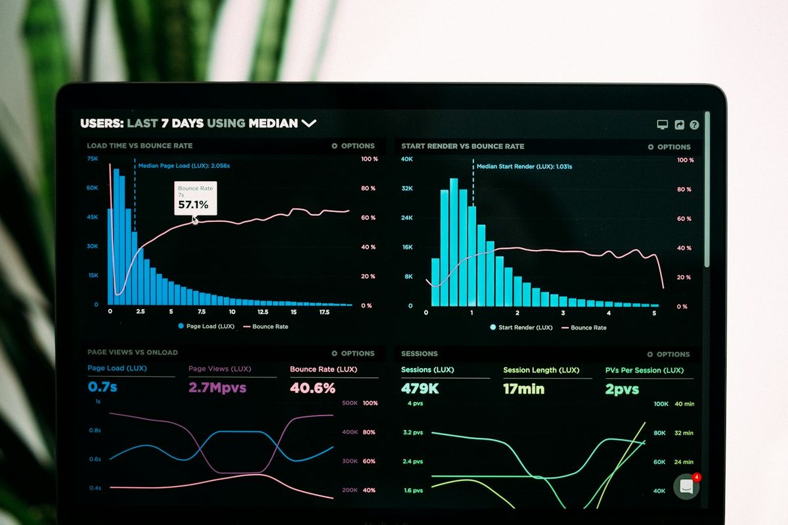

Answers before you start.
Straight answers on how we work, what we build and how we support projects after launch.

Auris Nexus Technologies is a technology consulting and digital solutions company. We help businesses solve operational problems through technology consulting, custom software development, business automation, digital transformation, AI integration and business systems such as CRM, HR, school and operations platforms.
Yes. We support growth-focused businesses across different sizes and sectors with tailored digital solutions.
Yes. We can improve, integrate, secure and modernise existing platforms as part of a broader roadmap.
Timelines vary by complexity, but we provide clear milestones and communication from the beginning of each engagement.
Yes. We provide maintenance, support plans and strategic optimisation after implementation.
Absolutely. We design and build custom business systems that match your processes and growth goals.
Yes. We work with clients locally and remotely, depending on their preference and project needs.
As part of building and deploying software — yes. We set up hosting, apply security practices like role-based access and encryption, and plan any migration a project needs.
Yes. We create premium, responsive digital experiences tailored to your brand and audience.
Yes. We implement CRM and business management systems aligned to operational needs.
Yes. We assess the right use cases and design AI-enabled solutions that improve efficiency and decision-making.
We work across sectors and go deepest in logistics & transport, education, healthcare, and professional & corporate services.
We begin by understanding your goals, users, operations and risks before defining the right solution.
Yes. We can tailor the scope and delivery plan to fit your budget and strategic priorities.
We follow a disciplined process with clear communication, testing, performance checks and accessibility review.
Yes. We provide training, documentation and ongoing support to help your team adopt and grow with the solution.
Yes. We support digital visibility through technical SEO, content structure and conversion-focused design.
Yes. Ownership terms are set out clearly in the project agreement before work begins, so there's no ambiguity about who owns the code, data and any custom platform once it's delivered.
Yes. Our sweet spot is organisations with real operational complexity — multiple teams, roles or locations — rather than headcount. Larger engagements are scoped individually.
We design role-based access from the start, so people only see and do what their role allows. Depending on the system, that includes per-tenant data isolation, secure authentication and auditability.